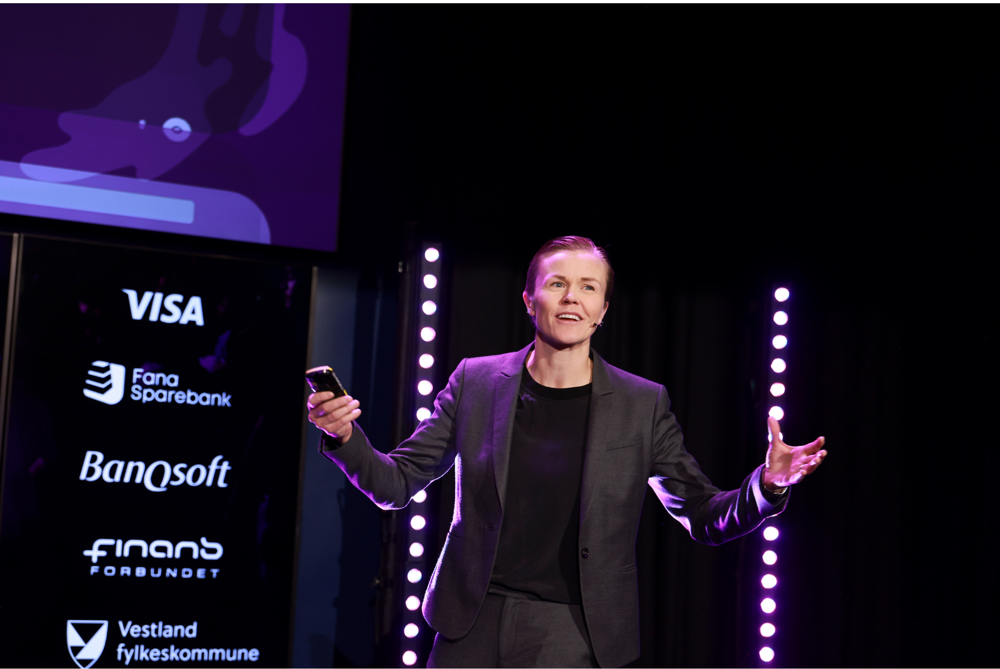

Teknologi.
Forretning.
Mennesker.
En engasjerende foredragsholder som oversetter komplekse teknologiske konsepter til konkret forretningsverdi. Med over 8 års erfaring innen kunstig intelligens, kombinert med bakgrunn som eliteseriespiller og landslagskeeper, leverer Nora foredrag som treffer i skjæringspunktet mellom tung teknologi, endringsledelse og prestasjonskultur.
Forespørsel om foredrag
Mine Foredrag
Foredragene skreddersys alltid publikum – enten det er toppledergrupper, tekniske utviklerkonferanser, eller bedriftssamlinger. Her er de mest etterspurte temaene, men jeg utformer gjerne tilpassede tema etter deres spesifikke behov.
Kunstig Intelligens i praksis
Hvordan dra reell nytte av egne data med KI? Forbi hypen: Praktisk implementering, generativ KI, dataplattform som fundament, og hvordan teknologi og forretning må spille sammen for å skape verdi.
Etikk, Bias og Ansvarlig AI
"Brilliant but Biased". Hvilket ansvar har vi når vi bygger og bruker KI-systemer? Om store språkmodeller, implisitt bias, hallusinering og hvorfor tverrfaglighet er den beste medisinen mot algoritmisk slagside.
Prestasjon og Ledelse
"Fra garderobeprat til git commit". Lærdommer fra en karriere som landslagskeeper i fotball, overført til moderne tech-team. Om disiplin, autonomi, å bygge psykologisk trygghet og levere under press.
Utvalgte Scener
Vestlandskonferansen 2026
Paneldebatt: Fra folkestyre til plattformstyre
Booster Conference
Hvordan dra nytte av egne data med KI
JavaZone
Fra garderobeprat til git commit
Norway Fintech Festival
AI: Brilliant but Biased?
Oda Network / SheCodes
AI-verktøy for koding – En jungel av muligheter
JavaZone
Anta bias. Alltid.
Har også holdt en rekke andre bedriftsinterne foredrag, strategiske workshops og paneldebatter.
Om Foredragsholderen
I tillegg til å stå på scenen, står Nora midt i den operative KI-utviklingen. Som tidligere eliteseriespiller og landslagskeeper, tar hun med seg en vinnerkultur preget av høyt tempo, lagånd og presisjon, som overføres direkte til tech-scenen og ledelsesrommene. Hun er kjent for å være uredd, engasjert og ærlig i sin formidling.
- Fagleder KI i Kantega: Totalansvar for KI-avdelingen i Bergen. Rådgiver for kunder på strategisk nivå og leder for etablering av skalerbare dataplattformer.
- Drivkraft i fagmiljøet: Leder programkomiteen for teknologikonferansen Make Data Smart i Bergen, og styremedlem i Dataforeningen Region Vest.
- Akademisk tyngde: Mastergrad i statistikk (finans, forsikring og risiko) fra UiB, Bachelor i matematikk og økonomi fra UiO, og årsstudium i organisasjon og ledelse fra HINN.
Forespørsel om Foredrag
Fyll ut skjemaet under for å sende en uforpliktende forespørsel, eller send en e-post direkte til nora@kantega.no.